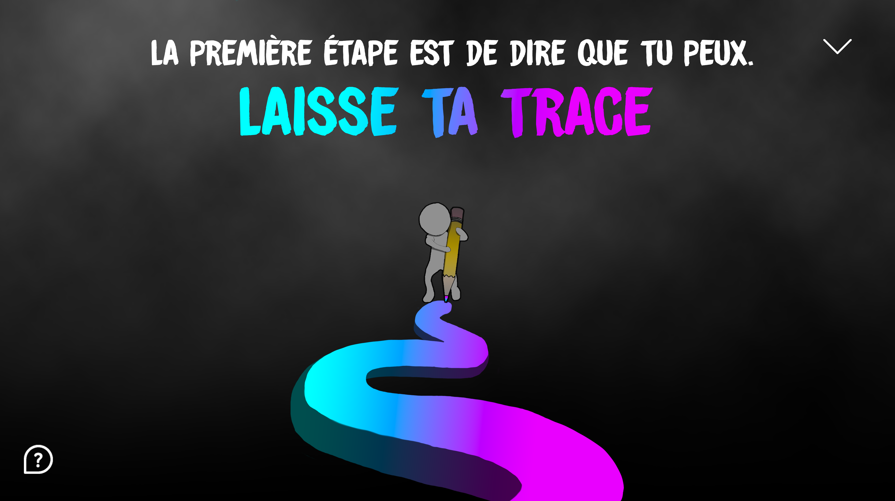

Publicité
La semaine des Arts du Collège Montmorency est une semaine riche en ateliers et en artistes. C'est pourquoi notre professeure nous a demandé de créer une publicité faisant la promotion de la semaine des Arts. Le thème est de laisser sa trace. Il fallait créer une publicité "Pop-up" et une bannière.
